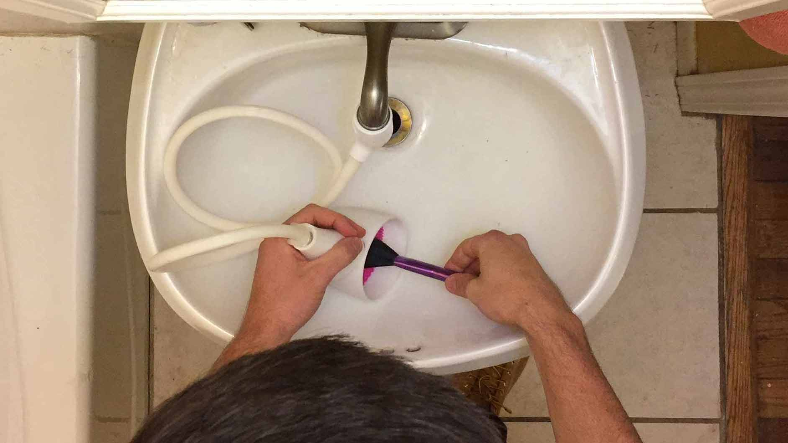
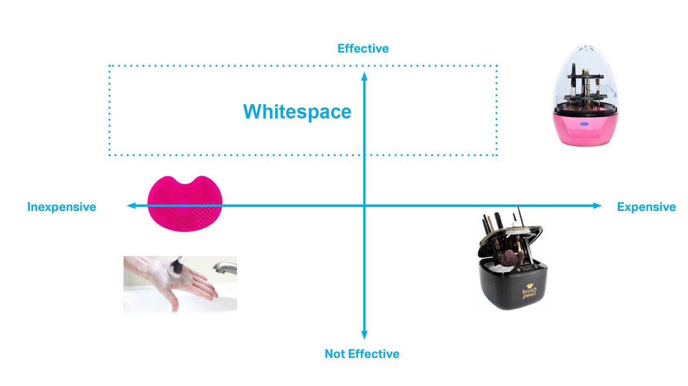
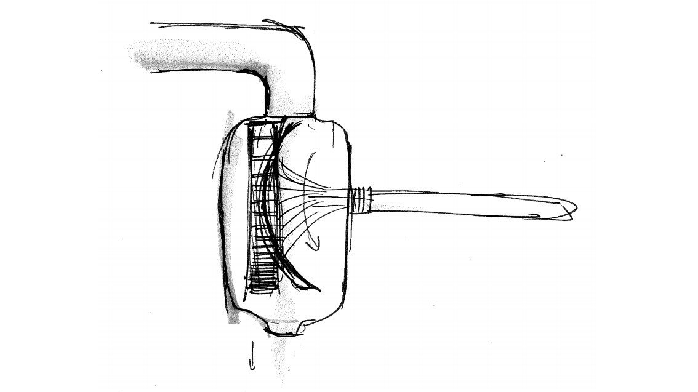
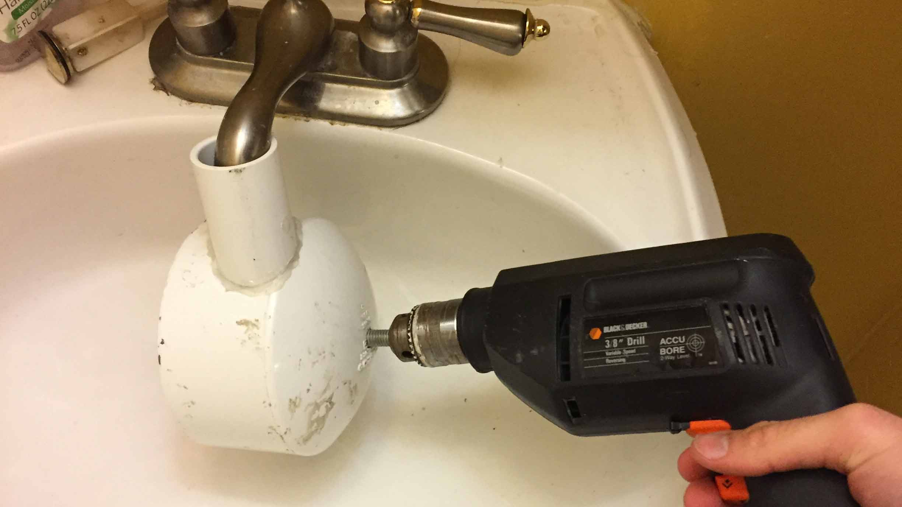
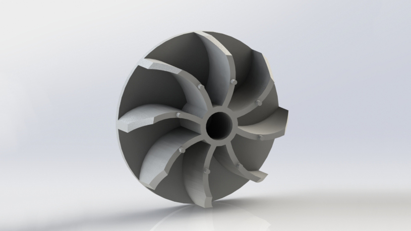
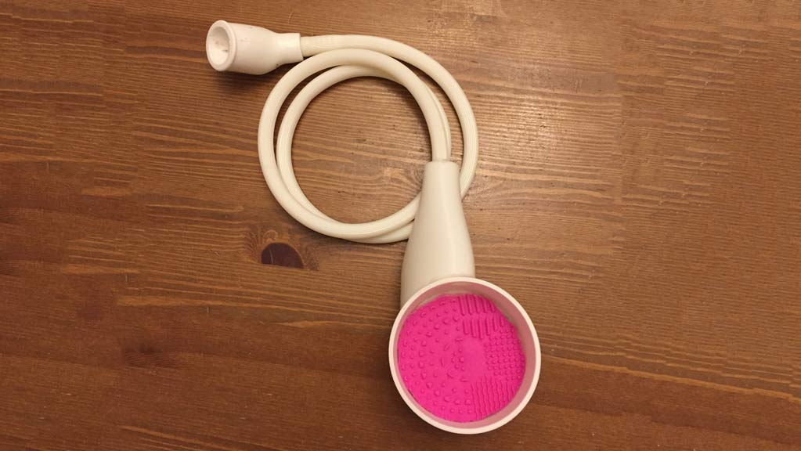

skills
human factors, iterative design, rapid prototyping, product design
role
chief designer and manufacturer
client
human centered product design class
I lead a multidisciplinary team in identifying a white space. My team consisted of a theatre student, a chemistry student, a journalism student and myself. We identified that there was room for improvement in the makeup brush cleaning space and designed a hydraulic makeup brush cleaner.
This project was a great chance to use the design process from ideation to market ready design. Working with a team of non-engineers gave me relevant experience to companies where input comes from not only designers, but other divisions like finance and marketing.
Identify a White Space
After coming up with over 100 problems as a team, we narrowed in on a few projects such as makeup brush cleaning and visually appealing bird repellent. We researched current solutions and where they failed. We selected makeup brush cleaning as the best target area due to the lack of middle priced solutions.

"Why should washing makeup brushes take longer thant doing laundry?"
-daily makeup user
Observe Users
I interviewed and observed a couple representative users in their daily makeup routine and their cleaning process. Our team observed 12 users from young women who wear makeup once a week to 40 year old men who dress in drag. We determined the key issues were user input time, required manual effort, and price.
Brainstorm
We brainstormed ideas for how to solve each issue. We then narrowed down to three ideas to pursue further. We considered a motorized cleaner, an ultrasonic and vibrating cleaner, and a hydraulic powered cleaner.


Prototype
After making some rough mockups of each design, we tested their functionality and user experiences. We picked the hydraulic powered cleaner based on user feedback, cost and patentability.
Test and Iterate
I modeled and 3D printed many versions until the water wheel worked from sink water pressure. I also designed the shape to fit nicely into the user’s hand. Users reported having strong mental models of the design because of the similarities to a pencil sharpener.


Results
I designed the final iteration to be injection molded for mass production and did a value chain analysis to find where we could save money and differentiate from competitors. Our design was 400% faster than hand washing while at a total cost under $40.